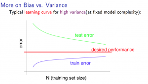

Notas del curso Machine Learning de Andrew Ng en Coursera
Pablo Aguado - 2020
Índice
- 1. Info
- 2. Ideas
- 3. Semana 1
- 4. Semana 2
- 4.1. Environment setup instructions
- 4.2. Multivariate linear regression
- 4.2.1. Video: Multivariate linear regression
- 4.2.2. Reading: multiple features
- 4.2.3. Video: Gradient descent for multiple features
- 4.2.4. Reading: Gradient descent for multiple features
- 4.2.5. Video: Gradient descent in practice I - Feature scaling
- 4.2.6. Reading: Gradient descent in practice I - Feature scaling
- 4.2.7. Video: Gradient descent in practice II - Learning rate
- 4.2.8. Reading: Gradient descent in practice II - Learning rate
- 4.2.9. Video: Features and polynomial regression
- 4.2.10. Reading: Features and polynomial regression
- 4.3. Computing parameters analitically
- 4.4. Submitting programming assignments
- 4.5. Review
- 4.6. Octave/Matlab tutorial
- 4.7. Review
- 5. Semana 3
- 6. Semana 4
- 7. Semana 5
- 8. Semana 6
- 9. Semana 7
- 10. Semana 8: Unsupervised learning
- 11. Semana 9: Anomaly detection & Recommender systems
- 12. Semana 10: Large scale machine learning
- 13. Week 11: Application example: photo OCR
1 Info
- https://www.coursera.org/learn/machine-learning
- Important notes for new ML students
- Hay más test cases en los Recursos del curso.
- Hay que usar Octave > 4.0.0
- Cousera Honor Code
2 Ideas
Ideas mías a lo largo del curso.
- Probar AutoML-Zero.
- Buscar clusters en espacios transformados y muy transformados. Ej: Fourier, Fourier de Fourier, Cepstrum…
3 Semana 1
Intro, regresión lineal, repaso de Álgebra.
3.1 Introduction
3.1.1 Video: Welcome
3.1.2 Video: What is Machine Learning
- Los algoritmos más importantes son el aprendizaje supervisado y el aprendizaje no supervisado. Es esta además la clasificación más general de algoritmos.
- Otros son el aprendizaje por refuerzo y los sistemas de recomendación.
- Hay que aprender las herramientas, pero es muy importante saber cómo y cuándo usarlas.
- Sea una máquina que debe hacer una tarea T, con un desempeño P y que la exponemos a experiencias (instancias) E de esa tarea T. Se dice que la computadora aprende si su desempeño P en la tarea T aumenta proporcionalmente a la cantidad de experiencias E.
- Otra definición de aprendizaje automático es la capacidad (de la computadora) de aprender a resolver problemas para los que no fue programada. ~
3.1.3 Reading: What is Machine Learning?
3.1.4 Video: Supervised Learning
- En el aprendizaje supervisado, le mostramos al programa ejemplos de entradas y sus correspondientes salidas/respuestas correctas. Ya sabemos cómo son las respuestas corectas; tenemos la idea de que hay una relación entre las entradas y las salidas. Dado un conjunto de entradas y salidas, intentamos obtener un modelo que permita predecir/inferir las salidas a nuevos datos de entrada.
- Los problemas de aprendizaje supervisado se clasifican en problemas de regresión y de clasificación:
- Problema de regresión si el conjunto imagen es continuo. La salida es una variable numérica.
- Problema de clasificación si el conjunto imagen es discreto. La salida es una variable categórica.
- Los algoritmos de Máquinas de Vector Soporte permiten infinitos valores de entrada.
3.1.5 Video: Unsupervised Learning
- En el aprendizaje no supervisado, le damos datos al programa con la intención de encontrar estructuras subyacentes, patrones.
- Un ejemplo típico es el clustering o agrupamiento de datos.
- En el ejemplo de sonido Cocktail Party, según FAQ de la semana 1, lo que usan es Principal Component Analysis, PCA, a mathematical trick that takes two sets of correlated data, and returns two new sets of data that are not correlated. No lo había visto así antes, creo…
3.2 Model and cost function
Vemos la regresión lineal como primer algoritmo de aprendizaje supervisado.
3.2.1 Video: Model representation
Un poco de nomenclatura:
- \(m\): cantidad de ejemplos de entrenamiento.
- \(\vec{x}\): entradas / descriptores / features
- \(\vec{y}\): salidas. \(\hat{\vec{y}}\) son las salidas estimadas.
- \(h_\theta\): función de hipótesis, de estimación. Tiene parámetros \(\vec{\theta}\). Entonces tenemos que \( \hat{y}^{(i)} = h_\theta(x^{(i)}) = h(x,\theta) \)
- \(x^{(i)}\): entrada $i$-ésima del vector de entradas, con índices empezando en 1.
- \((x^{(i)},y^{(i)})\) es un ejemplo de entrenamiento.
- Para regresión lineal de una variable tenemos entonces
\[ \hat{y}^{(i)} = h_\theta(x^{(i)}) = \theta_0 + \theta_1 * x^{(i)} \]
3.2.2 Reading: Model representation
- \(X\): el espacio de los valores de entrada.
- \(Y\): el espacio de los valores de salida.
- El objetivo del aprendizaje supervisado es encontrar una función \(h: X \rightarrow Y\) que sea buena prediciendo salidas a partir de entradas.
3.2.3 Video: Cost function
Formalizamos el problema del aprendizaje como la minimización de una función de costo \(J(\vec{\theta})\). La función de costo habitual y recomendada para problemas de regresión lineal es el error cuadrático medio (Mean Squared Error o Mean Squared Deviation).
Para un predictor como lo es \(h_\theta\), el MSE se define como \[ MSE = \frac{1}{N} (\sum_{1}^{N}Y_i - \hat{Y}_i )^2\]
En nuestro caso vamos a definir a la función de costo para este problema de regresión lineal univariable como
\[ J(\theta_0 , \theta_1) = \frac{1}{2m} \sum_{i=1}^m( h_\theta(x^{(i)}) - y^{(i)} )^2 \] \[ J(\theta_0 , \theta_1) = \frac{1}{2m} \sum_{i=1}^m( \theta_0 + \theta_1 * x^{(i)} - y^{(i)} )^2 \]
- El factor \(1/2\) es para ahorrar cálculos, puesto que en redes neuronales al hacer backpropagation o gradient descent hay que derivar esta función de error y entonces con este \(1/2\) simplificamos el \(2\) de la derivada del cuadrado.
La optimización es entonces encontrar los parámetros \(\theta\) que minimizan la función de costo: \[ \underset{\theta_0 , \theta_1}{\text{min}} J(\theta_0 , \theta_1)\]
En las notas del curso encontramos la forma matricial, que luego usamos para hacer descenso por el gradiente de forma matricial. Lo pongo acá por completitud.
MSE: \[ J(\theta) = \frac{1}{2m} (X\times\theta-Y)^T(X\times\theta-Y) \]
El producto implica la sumatoria y el cuadrado elemento a elemento.
3.2.4 Reading: Cost function
3.2.5 Video: Cost function intuition I
3.2.6 Reading: Cost function intuition I
3.2.7 Video: Cost function intuition II
3.2.8 Reading: Cost function intuition II
3.3 Parameter learning
3.3.1 Video: Gradient descent
El descenso por el gradiente es un algoritmo de optimización que vamos a usar (entre otras cosas) para minimizar la función de costo.
Hacer \[ \vec{\theta}[n+1] := \vec{\theta}[n] - \alpha \frac{\partial J(\vec{\theta})}{\partial\theta} \]
(expresado de otra manera)
\[ {\theta}_j[n+1] := {\theta}_j[n] - \alpha \frac{\partial J(\vec{\theta})}{\partial\theta} \]
Hasta la convergencia de \(\vec{\theta}\), equivalente a la convergencia de \(J(\vec{\theta})\):
\[ \vec{\theta}[n] - \vec{\theta}[n-1] < \vec{\epsilon} \] \[ J(\vec{\theta}[n]) - J(\vec{\theta}[n-1]) < \epsilon \]
- Nomenclatura: usamos \(:=\) como operador de asignación.
- \(\alpha\) es la tasa de aprendizaje o learning rate del algoritmo.
Para calcular la derivada hacemos derivadas parciales. Actualizamos los parámetros simultáneamente en cada paso. Si actualizamos de a uno y recalculamos estamos haciendo otro algoritmo, que probablemente también converja pero es distinto.
Cuando la función de costo es el error cuadrático medio (MSE), la fórmula de actualización queda:
\[ \theta_j[n+1] := {\theta}_j[n] - \frac{\alpha}{m} \sum_{i=1}^m( h_\theta(x^{(i)}) - y^{(i)} ) x_j^{(i)} \]
- El primer termino de la sumatoria es la magnitud y dirección del error.
- El segundo término de la sumatoria es la sensibilidad de J respecto al parámetro, y resulta ser igual a la magnitud del descriptor asociado a ese parámetro.
3.3.2 Reading: Gradient descent
3.3.3 Video: Gradient descent intuition
- Si \(\alpha\) es muy grande, el algoritmo puede oscilar o incluso diverger.
- Si \(\alpha\) es muy chica, puede tardar mucho en converger.
- Con \(\alpha\) fija, los "pasos" que da el algoritmo son cada vez más chicos a medida que la función de costo se aproxima a un mínimo local.
3.3.4 Reading: Gradient descent intuition
3.3.5 Video: Gradient descent for linear regression
Dice Andrew cerca del minuto 4:40:
But, it turns out that that the cost function for linear regression is always going to be a bow shaped function like this. The technical term for this is that this is called a convex function.
¿Por qué?
- La función de costo \(J(\vec{\theta})\) es el error cuadrático medio (MSE).
- El MSE es cuadrático respecto a los parámetros siempre y cuando estos sean lineales, de grado 1. La función de hipótesis debe ser lineal respecto a los parámetros para que la función de costo sea cuadrática.
- Sea por ejemplo \[ h(x,y) = a.x^2 + b.y^2 - c.x^2 y^2 \]. Esta función tiene más de un mínimo.

- Su MSE quedaría algo como \[ x^4 + 2 x^2 y^2 - 2 x^4 y^2 + y^4 - 2 x^2 y^4 + x^4 y^4 \] (sólo la elevé al cuadrado)

Hay otras formas de estimar los parámetros (regresores). Una de ellas es el método de los mínimos cuadrados (/Ordinary Least Squares/). El descenso por el gradiente es más fácil de computar que OLS, en el caso de datasets grandes.
En realidad todo lo que vimos es descenso por el gradiente por lotes, o batch gradient descent, que es cuando la función de costo se optimiza usando todas las entradas disponibles. Esto es costoso.
- TODO Leer más de regresión lineal
3.3.5.1 Regresión lineal
3.3.6 Reading: Gradient descent for linear regression
3.4 Linear Algebra review
3.4.1 Video: Matrix vector multiplication
- Más adelante vamos a ver por qué es mejor vectorizar calculos en lugar de iterar.
- Hace un truco interesante que es incluir a la ordenada al origen dentro del vector de parámetros —en realidad está bien, es un parámetr calculado—, y luego introduce una columna de \(1\)s en la matriz de entradas.
- La alternativa es sumar la columna aparte. \(A*X + B\)
3.4.2 Video: Matrix matrix multiplication
- Acá hace el mismo truco pero para hacer varias predicciones a la vez: usa varios modelos y varias entradas.
3.4.3 Video: Inverse and transpose
Interesante:
But the intuition if you want is that you can think of matrices as not have an inverse that is somehow too close to zero in some sense.
- Las matrices que no tienen inversa son matrices singulares o degeneradas.
- Asumo que se refiere a matrices cuadradas, que podrían tener inversa.
4 Semana 2
4.1 Environment setup instructions
4.2 Multivariate linear regression
4.2.1 Video: Multivariate linear regression
En la regresión lineal multivariable o regresión lineal múltiple, tenemos varios valores de entrada o descriptores. Para tener una notación más compacta y conveniente, vamos a definir:
- \(\theta_0=1\) ;
- \(n\) es la cantidad de entradas, descriptores;
- vamos a usar \(\vec{\theta}\) con índice \(0\);
- y \(\vec{\theta}_j^{(i)}\) es el elemento j-ésimo del ejemplo i-ésimo.
Entonces \(\vec{\theta}\) tiene \(n+1\) elementos y \[ \vec{\theta} = 1 + \theta_1 + \theta_2 + \dots + \theta_n \]
Y luego \[ \vec{h_\theta}(\vec{x}) = \vec{\theta}^T \cdot \vec{x} = \vec{x}^T \cdot \vec{\theta} \]
- Intuición para el ejemplo de estimar el precio de un inmueble: \(\theta_0\) es el precio base.
En 4.3.1 se introduce notación matricial que luego en el ejercicio 1 usamos para expresar todo de forma vectorizada. Dejo todo acá para más completitud.
\[ \hat{Y}(\theta,X) = X \theta \]
4.2.2 Reading: multiple features
4.2.3 Video: Gradient descent for multiple features
La regla de actualización era:
\[ \vec{\theta}[n+1] := \vec{\theta}[n] - \alpha \frac{\partial J(\vec{\theta})}{\partial\theta} \]
Y para cuando la función de costo es el error cuadrático medio (MSE), queda (para actualización con todos los \(m\) ejemplos):
\[ \theta_j[n+1] := {\theta}_j[n] - \frac{\alpha}{m} \sum_{i=1}^m( h_\theta(x^{(i)}) - y^{(i)} ) x_j^{(i)} \]
- Puedo ver el factor de avance luego de \(\alpha\) como el aporte al error medio que hizo el descriptor \(x_j\) .
- El producto vectorial y la resta son el error medio para ese vector de entrada.
- El factor \(x_j\) es el aporte de ese elemento, en esa dirección.
- La dirección final es la suma vectorial de los elementos.
La versión vectorizada/matricial del algoritmo está en las notas del curso y después la usamos en el ejercicio de programación 1. La dejo acá por completitud.
\[ \theta_{n \times 1}[i+1] = \theta_{n \times 1}[i] - \frac{\alpha}{m} X_{m \times n}^T (X_{m \times n} \theta_{n \times 1} - Y_{m \times 1} )_{m \times 1} \] \[ \theta_{}[i+1] = \theta[i] - \frac{\alpha}{m} X^T (X \theta - Y) \]
4.2.3.1 TODO EL ERROR ES MAYPR CUANDO HAY CORRELACIÓN ENTRE DESCRIPTORES Y PARÁMETROS.
4.2.4 Reading: Gradient descent for multiple features
4.2.5 Video: Gradient descent in practice I - Feature scaling
- Al parecer, el algoritmo de descenso por el gradiente converge bastante más rápidamente si los descriptores están en el mismo orden de magnitud.
- Andrew propone que estén más o menos en el rango \(-3 < x_j < 3\) y duda si \(-\frac{1}{3} < x < \frac{1}{3}\)
- Para esto se suele normalizar cada descriptor respecto al rango de sí mismo en la muestra (los m ejemplos de entrada) o respecto a la desviación estándar. Esto se llama feature scaling.
- Otra práctica habitual es centrar en cero los valores, para lo cual se resta la media de la muestra. Esto se llama mean normalization.
4.2.5.1 Más de feature scaling y mean normalization
De la ecuación de actualización de los parámetros de la ecuación de hipótesis infiero que el vector se mueve más rápidamente en dirección de los parámetros más grandes. Sin embargo en 4.2.6 dice:
This is because θ will descend quickly on small ranges and slowly on large ranges, and so will oscillate inefficiently down to the optimum when the variables are very uneven.
- DONE Averiguar más de esto. ¿Por qué se hace? ¿Tienen que ser de la misma magnitud o ser chicos?
- Ver https://www.robertoreif.com/blog/2017/12/21/importance-of-feature-scaling-in-data-modeling-part-2
- Ver https://math.stackexchange.com/questions/2341704/feature-scalings-effect-on-gradient-descent
Estaba entendiendo mal las curvas de nivel. El eje corto de las elipses es el asociado a los descriptores más grandes, con más rango. Son curvas de nivel de \(J(\theta)\), no de \(J(x)\). Ahora si estoy de acuerdo.
En regresión lineal (quizás puedo generalizarlo a cualquiera) los parámetros tienen rangos "inversos" a los de los descriptores que multiplican. Si un descriptor tiene un rango grande, entonces su parámetro asociado va a tener un rango chico.
Se podría solucionar también con learning rates diferenciados: más grandes para los descriptores de más rango, más chicos para los de menos rango.
¡Lo que dice en 4.2.6 está mal expresado entonces!
- TODO Corregir https://math.stackexchange.com/questions/2341704/feature-scalings-effect-on-gradient-descent
4.2.6 Reading: Gradient descent in practice I - Feature scaling
4.2.7 Video: Gradient descent in practice II - Learning rate
- Si la función de costo \(J(\vec{\theta})\) diverge u oscila, entonces mi tasa de aprendizaje \(\alpha\) es muy grande. Si es muy chica, converge lentamente.
- Puedo verlo graficando la función de costo.
- Elegir el valor de \(\alpha\) es, a priori, por prueba y error. ¿Habrá heurísticas para determinar un buen valor inicial?
- La condición de convergencia también suele depender del problema. Andrew habla de valores absolutos… ¿por qué no usar un \(\epsilon\) relativo?
4.2.8 Reading: Gradient descent in practice II - Learning rate
4.2.9 Video: Features and polynomial regression
4.2.10 Reading: Features and polynomial regression
- La regresión lineal es ajustar un modelo lineal, de grado 1, una combinación lineal entre las entradas y parámetros.
- Podemos ajustar modelos no lineales como hipótesis si codificamos estas no linealidades dentro de los descriptores. Por ejemplo, para el caso de la estimación de precios de casas, un posible descriptor podría ser el cuadrado del área, y ahí estamos incluyendo algo cuadrático en el modelo.
- Al incluir las no linealidades en los descriptores, pero todavía usando los parámetros como multiplicadores de orden 1, podemos seguir usando el descenso por el gradiente para optimizar.
- Andrew habla también de usar relaciones entre entradas básicas para construir otras entradas. Por ejemplo, el producto de dos descriptores hace un nuevo descriptor que codifica otra relación.
4.3 Computing parameters analitically
4.3.1 Video: Normal equation
- Otra forma de optimizar la regresión lineal es resolverla analíticamente con el método de los mínimos cuadrados lineales / ecuación normal. Esto da la solución óptima (que existe porque hemos dicho que para regresión lineal es un espacio de búsqueda cónvexo con un solo mínimo).
\[ \vec{\theta} = ( X^T \times X )^{-1} \times X^T \times \vec{y} \]
\[ X = \left[ x^{(i)} \right] \]
- A \(X\) la llamamos matriz de diseño. Cada fila es un ejemplo, y tiene tamaño $m × n+1 $
- La complejidad de invertir una matriz es \(O(n^3)\) y esto se pone lento para \(n > 10^5\). La complejidad del descenso por el gradiente, en cambio, es de \(O(k \cdot n^2)\).
- \(( X^T \times X )^{-1} \times X^T = X^{+}\) es la pseudoinversa de \(X\), y el método de mínimos cuadrados no es más que una solución (óptima en el sentido del error cuadrático) de un sistema de ecuaciones sobredeterminado.
- La pseudoinversa se puede calcular con Singular Value Decomposition o Descomposición QR, por ejemplo.
- La regresión por mínimos cuadrados asume muchas cosas que no necesariamente siempre se cumplen. Ver la regresión robusta como alternativa.
4.3.2 Reading: Normal equation
4.3.3 Video: Normal equation noninvertibility
Si \(( X^T \times X )\) no es invertible, entonces puede haber 2 problemas:
- El sistema esta subdeterminado. Faltan ejemplos, \(m < n\) / tenemos muchos descriptores.
- Después vamos a ver que se soluciona con regularización.
- Algunos descriptores están muy correlacionados / son linealmente dependientes.
Si no es invertible naturalmente (es singular o degenerada) igual se puede invertir con la pseudoinversa. Igual esto no sería problema si hubiésemos usado la pseudoinversa desde un principio en lugar de estar haciéndolo manualmente. Y, nuevamente, seguro hay métodos más robustos (aunque no hay que dejar de hacer análisis de la información con la que contamos).
4.3.4 Reading: Normal equation noninvertibility
4.4 Submitting programming assignments
4.5 Review
4.6 Octave/Matlab tutorial
% Para ver una matriz/vector como píxeles con color A = magic(9) figure imagesc(A) colorbar colormap gray
4.7 Review
4.7.1 Programming assignment 1: linear regression
- Mi gradient descent convergía pero no al mismo resultado exacto, y más rápida o lentamente. Me faltaba el factor \(1/m\).
- Armé una versión vectorizada del gradient descent pero es distinta a la propuesta:
La mía:
- usé \(n\) como la longitud de \(\theta\), incluyendo los \(1\)s.
M = length(y); % number of training examples N = length(theta); error = (X * theta) - y; % Mx1 % ponderated_error = repmat(error, [1, N]) .* X; % MxN % ponderated_error = error * ones(1,n) * X % MxN, equivale al broadcasting ponderated_error = error .* X; % Broadcasting. MxN % gradient = sum(ponderated_error,1); % 1xN gradient = ones(1,M) * ponderated_error; % 1xN, equivalente a la sumatoria theta = theta - (alpha/M) * gradient'; % Nx1
\[ \theta_{n \times 1}[i+1] = \theta_{n \times 1}[i] - \frac{\alpha}{m} \left[ 1_{1 \times m} \left( X_{m \times n} \theta_{n \times 1} - Y_{m \times 1} \right)_{m \times 1} 1_{1 \times n} X_{m \times n} \right]^T \]
La original es más compacta:
\[ \theta_{n \times 1}[i+1] = \theta_{n \times 1}[i] - \frac{\alpha}{m} X_{m \times n}^T (X_{m \times n} \theta_{n \times 1} - Y_{m \times 1} )_{m \times 1} \]
5 Semana 3
5.1 Classification and representation
5.1.1 Classification
Vamos a ver la regresión logística que es un algoritmo de clasificación (aunque su nombre diga regresión).
La regresión lineal no es un buen método para la clasificación en variables discretas. Acá necesitamos algo más no lineal. Una opción es usar regresión lineal + un umbral arbitrario de separación, pero aún no es suficiente.
Vamos a ver clasificación binaria. Definimos como \(0\) y \(1\) a las clases. También usamos etiqueta para denominar a la salida \(h_\theta(x)\).
5.1.2 Hypothesis representation
En clasificación binaria, los resultados observados sólo pueden tomar los valores \(0\) y \(1\), y por tanto nuestra función de hipótesis debería también sólo tomar esos valores.
Para empezar elegimos una función que esté acotada a ese rango. Una opción es la función logística o sigmoidea:
\[ h(z) = \frac{1}{1+e^z} \]
\[ h(\theta,x) = h_\theta(x) = \frac{1}{1+e^{\theta^T x}}\]
- Mapea los reales al intervalo \([0, 1]\).
Podemos interpretar los resultados como la probabilidad de que la hipótesis tome un valor, dada determinada entrada.
- La suma de las probabilidades debe ser \(1\).
5.1.2.1 La función logística o sigmoidea
- Se parece a la función cumulativa o función de distribución acumulada de una distribución normal/gaussiana.
- Pero esta tiene una función explícita, mientras que la FDA de la gaussiana no tiene forma cerrada.
- La función de densidad de probabilidad asociada "Se parece a la distribución normal en su forma, pero tiene colas más pesadas (y, por lo tanto, menor curtosis)". Wikipedia: Distribución logística
- Puedo pensar que la FDP de la distribución logística me indica la cantidad de información que me da el valor de un descriptor. En el pico es donde más aporta; luego mientras más me alejo del centro, más claro es que es de una clase o de la otra.
- Es una aproximación suave de la función escalón.

\[ f(x) = \frac{L}{1+e^{-k(x-x_0)}} \]
- \(L\) es el valor máximo.
- \(k\) es la tasa de crecimiento o pendiente de la curva.
- \(x_0\) es el centro
5.1.3 Decision boundary
La clasificación es discreta; para hacerla discreta necesitamos agregar un umbral a nuestra función de hipótesis. No entiendo por qué pone el umbral como si fuese una cosa aparte de la función de hipótesis. Entonces, para la regresión logística hacemos:
\[ y = 0 \quad \text{si} \quad h(z) = h(z(\theta, x)) = h(\theta^T x) \lt 0,5 \] \[ y = 0 \quad \text{si} \quad h(z) = h(z(\theta, x)) = h(\theta^T x) \geq 0,5 \]
Lo que equivale a
\[ y = 0 \quad \text{si} \quad \theta^T x < 0,5 \] \[ y = 1 \quad \text{si} \quad \theta^T x \ge 0,5 \]
La función de entrada a la sigmoidea, \(z(\theta,x)\) define el umbral de decisión. Al igual que vimos para regresión lineal, esta función no tiene por qué ser lineal con respecto a los descriptores (¿mas sí lineal respecto a los parámetros?), y es la que va a separar las clases en su espacio. Por ejemplo, para dos variables podría ser un elipsoide: \( z(\theta,x) = \theta_0 + \theta_1 x_1 + \theta_2 x_2 + \theta_3 x_1^2 + \theta_4 x_2^2 \).
5.2 Logistic regression model
5.2.1 Cost function
Sea la función de costo \(J\) la media de una función de error:
\[ J(\theta) = \frac{1}{m} \sum_1^m error(\hat{y}, y) \]
Si usamos el error cuadrático medio como función de error para optimizar con el descenso por el gradiente, vamos a tener que derivar una función no lineal. Esto es porque la función logística/sigmoidea \(h(z)\) no es lineal con respecto a los parámetros θ, y por tanto el error cuadrático medio no es una función convexa; esto implica que tiene (¿o puede tener?) más de un mínimo.
Lo que hacemos entonces es proponer otra función de error que sea convexa y diferenciable. Por supuesto, tiene que penalizar las predicciones/hipótesis erróneas. La que se propone es
\[ error(h_\theta(x)) = error(h(\theta,x) = \quad -\log(h_\theta(x)) \quad \text{si} \quad y = 1 \] \[ error(h_\theta(x)) = error(h(\theta,x) = \quad -\log(1-h_\theta(x)) \quad \text{si} \quad y = 0 \]

- Nótese que tienden a infinito en \(0\) y \(1\) respectivamente.
- Usamos el logaritmo natural, base \(e\).
En la sección siguiente Andrew dice que esta función de costo (en realidad su forma simplificada) se puede derivar estadísticamente a partir del principio de estimación de máxima verisimilitud.
5.2.2 Simplified cost function and gradient descent
5.2.2.1 Forma simplificada
Teníamos a la función de error para la regresión logística como:
\[ error(h_\theta(x)) = error(h(\theta,x)) = \quad -\log(h_\theta(x)) \quad \text{si} \quad y = 1 \] \[ error(h_\theta(x)) = error(h(\theta,x)) = \quad -\log(1-h_\theta(x)) \quad \text{si} \quad y = 0 \]
La forma simplificada es:
\[ error(h(\theta,x)) = y (-\log(h_\theta(x))) + (1-y) (-\log(1-h_\theta(x))) \]
\[ error(h(\theta,x)) = -y \log(\hat{y}) - (1-y) \log(\hat{y}) \]
Esta función es convexa (si \(h\) es la sigmoidea, al menos).
Luego la función de costo queda:
\[ J(h_\theta(x)) = J(h(\theta,x)) = \frac{1}{m} \sum_{i=1}^m \left[ -y^{(i)} \log(h_\theta(x^{(i)})) - (1-y^{(i)}) \log(1-h_\theta(x^{(i)})) \right] \]
La forma vectorizada/matricial es:
\[ J(h(\theta,X)) = \frac{1}{m} \left[ - Y^T \log(h(X\theta)) - (1-Y)^T \log(1-h(X\theta)) \right] \]
5.2.2.2 Descenso por el gradiente
Resulta que la derivada \(\delta J(\theta,x)/\delta \theta\), es la misma que la que obtuvimos usando el error cuadrático medio (MSE) como función de costo para regresión lineal, y entonces la formula de actualización de parámetros es la misma:
\[ \theta_j[n+1] := {\theta}_j[n] - \frac{\alpha}{m} \sum_{i=1}^m( h_\theta(x^{(i)}) - y^{(i)} ) x_j^{(i)} \]
En forma vectorizada/matricial:
\[ \theta_{}[i+1] = \theta[i] - \frac{\alpha}{m} X^T (h(X \theta) - Y) \]
5.2.3 Advanced optimization
Hay algoritmos generales de optimización mejores (pero más complejos) que el descenso por el gradiente. Andrew nombra:
- Gradientes conjugados
- BFGS (Broyden–Fletcher–Goldfarb–Shanno algorithm)
- L-BFGS (Limited memory BFGS)
En Octave tenemos la función fminunc (de function minimize unconstrained) que nos permite optimizar usando una función de costo arbitraria. Le tenemos que proveer esa función de costo, que calcula la función de costo y el gradiente en cada iteración. En el ejemplo de Andrew, la función de costo calcula el gradiente de forma analítica, pero asumo que podrías también tener una memoria y usar diferencias.
5.3 Multiclass classification
5.3.1 Multiclass classification: one vs all
Si tenemos \(n\) salidas discretas posibles, podemos modelar el problema con \(n\) clasificadores binarios, que toman una salida como caso positivo y el resto como negativo.
Una vez que clasificamos con todos los clasificadores, elegimos la salida definitiva como aquella que haya tenido la mayor confianza; y entonces tenemos que ver la probabilidad predicha antes de discretizarla.
Nótese que esto también se cumple en los binarios cuando \(n=2\): podemos verlo como que ambos clasificadores definen la misma frontera de decisión.
5.4 Solving the problem of overfitting
5.4.1 The problem of overfitting
Empezamos a evaluar la bondad de ajuste de nuestros modelos.
- Un modelo subajustado (underfitted) o de alto sesgo (high bias) tiene mucho error para los datos con los que se entrenó, y por ende muy probablemente tenga mucho error con entradas nuevas. El modelo no captura las características del espacio del problema.
- El sesgo se asocia con prejuicio. El modelo prejuzga incorrectamente cómo deberían ser las entradas.
- Un modelo sobreajustado (overfitted) predice demasiado correctamente los datos con los que se ajustó, pero no predice correctamente entradas que sean un poco distintas; no generaliza. También se habla de que es un modelo con alta varianza (high variance), porque el espacio de funciones de hipótesis (de la complejidad propuesta) que predicen bien es muy grande; hay muchos grados de libertad.
En los ejemplos mostrados, el ajuste se incrementa con el grado de las funciones de hipótesis, para regresión lineal. Entonces complejizar las funciones de hipótesis implica agregar más descriptores —reales o sintéticos—.
5.4.1.1 Opciones para reducir el sobreajuste
Las principales formas de reducir el sobreajuste:
- Reducir la cantidad de descriptores.
- Manualmente o con métodos automáticos de selección de modelo.
- Perdemos información codificada en los descriptores que eliminamos.
- Usar regularización.
- Mantenemos todos los descriptores pero los ponderamos.
5.4.2 Cost function
Introducimos un parámetro de regularización \(\lambda\) en la función de costo, que pondera la suma de los cuadrados de los parámetros \(\theta\).
- Creo que este tipo de regularización tiene un nombre.
- Usamos el cuadrado para que no se cancelen entre sí y porque es derivable supongo.
Por ejemplo, para MSE:
\[ J(\theta,x,h(x),\lambda) = \frac{1}{2m} \left( \sum_{i=1}^{m} \left[ h(\theta,x^{(i)}) - y^{(i)} \right]^2 + \lambda \sum_{j=1}^{n} \theta_j^2 \right) \]
- Se suele omitir la ordenada al origen, término de sesgo o intercepto \(\theta_0\) porque no afecta mucho a los resultados.
- Me parece que debe haber una razón más interesante, porque esta decisión hace que tengamos que calcular las funciones de costo de forma separada para \(\theta_0\).
- En verdad es incorrecto pretender que el intercepto sea pequeño. Ver abajo en 5.4.2.0.0.1.
- Me parece que debe haber una razón más interesante, porque esta decisión hace que tengamos que calcular las funciones de costo de forma separada para \(\theta_0\).
Lo que buscamos es tener parámetros pequeños, lo que hace que la función de hipótesis sea suave, simple.
Más adelante vamos a ver formas de determinar el valor del parámetro de regularización \(\lambda\) para que funcione. Si es muy grande, hay subajuste, y si es muy chico seguimos con sobreajuste.
- DONE Buscar por qué no usamos \(\theta_0\)
El intercepto es nuestro factor de prejuicio que es independente de los descriptores. Es nuestra respuesta por defecto cuando no tenemos información, y no tiene por qué ser un valor chico. Por tanto no lo introducimos en el algoritmo de regularización.
Recordemos que el intercepto es una variable independiente, la ordenada al origen. Lo introducimos dentro del vector de parámetros solo por conveniencia, para simplificar los cálculos.
5.4.3 Regularized linear regression
La función de costo usando error cuadrático medio y regresión lineal nos queda
\[ J(\theta,x,h(x),\lambda) = \frac{1}{2m} \left( \sum_{i=1}^{m} \left[ h(\theta,x^{(i)}) - y^{(i)} \right]^2 + \lambda \sum_{j=1}^{n} \theta_j^2 \right) \]
Nótese que \(j\) empieza en \(1\). La regla de actualización derivada es:
\[ \theta_j[n+1] := {\theta}_j[n] - \frac{\alpha}{m} \sum_{i=1}^m( h_\theta(x^{(i)}) - y^{(i)} ) x_j^{(i)} \quad \text{si} \quad j=0 \]
\[ \theta_j[n+1] := {\theta}_j[n] - \frac{\alpha}{m} \sum_{i=1}^m( h_\theta(x^{(i)}) - y^{(i)} ) x_j^{(i)} + \frac{\lambda}{m} \theta_j \quad \text{si} \quad j>0 \]
Factorizando \(\theta_j\) de esta última ecuación nos queda
\[ \theta_j[n+1] := {\theta}_j[n](1 - \frac{\alpha\lambda}{m}) - \frac{\alpha}{m} \sum_{i=1}^m( h_\theta(x^{(i)}) - y^{(i)} ) x_j^{(i)} \quad \text{si} \quad j>0 \]
El factor \((1 - \frac{\alpha\lambda}{m})\) nos indica que en todas las actualizaciones se comienza reduciendo el valor anterior de los parámetros.
5.4.3.1 Forma matricial/vectorizada
La forma matricial/vectorizada queda
\[ J(\theta, X, \lambda) = \frac{1}{2m} \sum (X\theta - Y)^2 + \frac{\lambda}{2m} \theta(1:n)^T \theta(1:n) \]
La actualización necesita 2 etapas: la primera es el cálculo normal sin regularización, y de aquí guardamos \(\theta_0\); en la segunda sumamos el termino de regularización; y finalmente reemplazamos con el \(\theta_0\) encontrado anteriormente.
\[ \theta[i+1]^{(a)} := \theta[i] - \frac{\alpha}{m} X^T (h(X \theta) - Y) \] \[ \theta_0[i+1]^{} := \theta[i+1]^{(a)}(0) \] \[ \theta[i+1]^{} := \theta[i+1]^{(a)} + \frac{\lambda}{2m} \theta[i] \] \[ \theta[i+1](0) := \theta_0[i+1] \]
5.4.3.2 La ecuación normal con regularización
La ecuación normal era
\[ \theta = [ ( X^T \times X)^{-1} \times X^T ] \times Y \]
Agregamos un término de regularización:
\[ \theta = [ ( X^T \times X \times \lambda L)^{-1} \times X^T ] \times Y \]
Donde L es una matriz diagonal cuyo primer elemento de la diagonal principal es \(0\) e indica que no queremos que la regularización afecte al parámetro θ0 .
Este termino de regularización hace que esa matriz sea invertible aunque se trate de un sistema subdeterminado (siempre que \(\lambda>0\)).
- En las preguntas frecuentes de la semana 3 dicen que acá hay un "boceto de demonstración".
5.4.4 Regularized logistic regression
La función de costo de la regresión logística con regularización queda:
\[ J(h_\theta(x), \lambda) = J(h(\theta,x)) = \frac{1}{m} \sum_{i=1}^m \left[-y^{(i)} \log(h_\theta(x^{(i)})) - (1-y^{(i)}) \log(1-h_\theta(x^{(i)})) \right] + \frac{\lambda}{2m} \sum_{j=1}^n \theta_j^2 \]
La forma vectorizada/matricial:
\[ J(h(\theta,X), \lambda) = \frac{1}{m} \left[ -Y^T \log(h(X\theta)) - (1-Y)^T \log(1-h(X\theta)) \right] + \frac{\lambda}{2m} \theta(1:n)^T \theta(1:n) \]
La regla de actualización es igual que para regresión lineal con MSE, calculando por separado \(\theta_0\).
5.5 Review
5.5.1 Quiz: Regularization
- Agregar nuevos descriptores nos da una hipótesis igual o mejor a la que tenemos antes de agregarlos, en los datos de entrenamiento/modelado.
- Asumo que asume convergencia.
5.5.2 Programming assignment: logistic regression
- Corregí algunas funciones vectorizadas de mis notas.
- El logaritmo es logaritmo natural, no base 10. Por tanto debería escribir \(ln\) en lugar de \(log\), aunque en Octave la función es
log. - Cross entropy
- Usamos feature mapping para crear nuevos descriptores a partir de los 2 que teníamos. Los nuevos son todas las combinaciones lineales posibles de descriptores, hasta cierto grado.
function out = mapFeature(X1, X2) % MAPFEATURE Feature mapping function to polynomial features % % MAPFEATURE(X1, X2) maps the two input features % to quadratic features used in the regularization exercise. % % Returns a new feature array with more features, comprising of % X1, X2, X1.^2, X2.^2, X1*X2, X1*X2.^2, etc.. % % Inputs X1, X2 must be the same size % degree = 6; out = ones(size(X1(:,1))); for i = 1:degree for j = 0:i out(:, end+1) = (X1.^(i-j)).*(X2.^j); end end end % --------- % Add Polynomial Features % Note that mapFeature also adds a column of ones for us, so the intercept % term is handled X = mapFeature(X(:,1), X(:,2));
- \(\theta_0\): manejé los distintos gradientes así:
grad = (1/m) * X'*(sigmoid(X*theta) - y); grad0 = grad(1); grad = grad + (lambda/m).*theta; grad(1) = grad0;
6 Semana 4
Empezamos a ver redes neuronales.
6.1 Motivations
6.1.1 Non-linear hypotheses
Las redes neuronales son de los clasificadores más avanzados y usados hoy en día.
Para problemas poco lineales, la regresión logística empieza a necesitar muchos descriptores. Demasiados. Sea por ejemplo un problema con dos descriptores \(x_1\) y \(x_2\). Si queremos más expresividad de clasificación y añadimos como descriptores sintéticos todos los productos de segundo orden, tenemos \(x_1^2 , x_2^2, x_1 x_2\), y tendríamos un total de 5 descriptores. Este total crece como \(O(\frac{n^2}{2})\). Los de tercer orden crecen como \(O(n^3)\).
Hay muchos problemas que de entrada ya están definidos por muchos descriptores. Un ejemplo: las imágenes digitales. Por ejemplo, una imagen de 100×100px requeriría aproximadamente 50 millones de descriptores de segundo grado.
6.1.2 Neurons and the brain
- The "one learning algorithm" hypotesis: el cerebro tiene el mismo algoritmo de aprendizaje siempre, y se adapta a cualquier entrada.
- TODO https://www.lesswrong.com/posts/9Yc7Pp7szcjPgPsjf/the-brain-as-a-universal-learning-machine
- TODO https://www.youtube.com/watch?v=AY4ajbu_G3k
- TODO https://www.youtube.com/watch?v=NKpuX_yzdYs
- TODO https://www.youtube.com/watch?v=zIwLWfaAg-8
- TODO https://www.wired.com/2013/05/neuro-artificial-intelligence/
6.2 Neural networks
6.2.1 Model representation I
Está largo de escribir así que copio la imagen:

Algo de nomenclatura y convenciones:
- Es equivalente hablar de una unidad, una neurona, la salida de una neurona o la activación de una neurona. Siempre hablamos del resultado de la función de activación ante ciertas entradas y parámetros o pesos: \(g(\theta,x)\). La neurona en sí no tiene significado en el modelo, aunque lo tiene en el diagrama.
- La unidad 1 de la capa 2 es \(a_1^{(2)}\).
- Se suele omitir la unidad de sesgo de cada capa, \(a_0^{(j)}\), porque vale siempre 1. Esta es la que se multiplica por \(\theta_0\). DISCREPO.
- \(h_{\Theta}^{}(\vec{x}^{})\) es la salida final de la red neuronal, en función de las entradas.
- La función de activación típica es la función logística/sigmoidea.
- A los parámetros de la función también les decimos pesos.
- Θ(j) es la matriz de pesos que relaciona la capa \(j\) con la siguiente \(j+1\). Si una capa \(j\) tiene \(s_j\) unidades y la siguiente es \(j+1\) con \(s_{j+1}\) unidades, la dimensión de \(\Theta^{(j)}\) será \((s_{j+1})\times(s_j+1)\) (entradas × (salidas + entradas independientes)); el \(+1\) es por la unidad de sesgo.
- En los diagramas se funden axones y dendritas de capas conectadas, adyacentes. Entonces los únicos axones son los de la capa de salida.
- A las capas que no son de salida o entrada se les suele llamar capas ocultas.
6.2.2 Model representation II
Este modelo básico de red neuronal es un conjunto de funciones logísticas encadenadas. La forma de conectar las neuronas (arquitectura) le va a permitir aprender funciones no lineales complejas.
En forma vectorizada y asumiendo la misma función de activación \(g^{(j)}\) para todas las neuronas:
\[ h_{\Theta}^{}(\vec{x}^{}) = h(g, \vec{x}, \Theta) \] \[ \vec{a}^{(j) }= g_{}^{}(\vec{z}^{(j)}) = g(\Theta^{(j-1)} \vec{a}^{(j-1)}) \]
6.3 Applications
6.3.1 Examples and intuitions I
Con una neurona de 3 entradas puedo calcular las funciones AND y OR.
6.3.2 Examples and intuitions II
Ejemplo de XNOR.
6.3.3 Multiclass classification
Para clasificación multiclase solo tenemos que tener tantas salidas como clases. Luego, codificamos la salida como un vector "one hot", donde todos los elementos son \(0\) menos el de la salida correcta, que es \(1\).
Las salidas de la red \(\vec{\hat{y}} = h_\Theta(\vec{x})\) no son una distribución de probabilidad, no necesariamente suman 1. Son la salida de distintas sigmoideas, y cada una representa la confianza que tiene ese clasificador.
6.4 Review
6.4.1 Quiz: Neural networks: representation
6.4.2 Programming assignment: multi-class classificatin and neural networks
7 Semana 5
Vamos a ver el algoritmo de retropropagación o propagación hacia atrás (backpropagation) para el aprendizaje de redes neuronales.
7.1 Cost function and backpropagation
7.1.1 Cost function
Para optimizar un conjunto de parámetros \(\Theta\) necesitamos primero definir una función de costo a minimizar.
Algunas definiciones:
- \(K\) es la cantidad de salidas de la red.
- Usamos \(k\) para indizarlas.
- \(L\) es la cantidad de capas de nuestra red.
- Usamos \(l\) para indizarlas.
- \(s_l\) es la cantidad de neuronas/unidades de la capa \(l\), sin contar la unidad de sesgo \(a_0^{(l)}\).
La función de costo es una extensión de la regularizada que usábamos para regresión logística.
- Sumamos los errores de todas las salidas.
- Regularizamos todos los parámetros \(\theta\) de las matrices \(\Theta\), excepto aquellos que relacionan unidades de sesgo. Estos son corresponden a
la primera fila yla primera columna de cada \(\Theta\).
\[ J(\Theta, \lambda) = \frac{1}{m} \sum_{k=1}^K \sum_{i=1}^m \left[-y_k^{(i)} \log(h_\Theta(x^{(i)})_k) - (1-y_k^{(i)}) \log(1-h_\Theta(x^{(i)})_k) \right] + \frac{\lambda}{2m} \sum_{l=1}^L \sum_{v=0}^{s_{l+1}} \sum_{j=1}^{s_l} (\Theta_{v,j}^{(l)})^2 \]
- Yo voy a usar \(v\) donde él usa OTRA \(i\).
7.1.2 Backpropagation algorithm
Esto está complicado así que nos lo dan sin demostraciones.
El algoritmo de retropropagación o propagación hacia atrás sirve para calcular el gradiente de la función de costo en función de los parámetros. Luego usamos este gradiente en algún algoritmo de optimización como el descenso por el gradiente, para encontrar los parámetros que minimizan la función de costo.
\[ \frac{\partial J(\Theta)}{\partial \Theta_{v,j}^{(l)} } = D_{v,j}^{(l)} \]
\[ D_{v,j}^{(l)} = \frac{1}{m} \Delta_{v,j}^{(l)} + \lambda \Theta_{v,j}^{(l)} \quad \text{si} \quad j=0 \]
\[ D_{v,j}^{(l)} = \frac{1}{m} \Delta_{v,j}^{(l)} \quad \text{si} \quad j\ne0 \]
\(\Delta_{v,j}^{(l)}\) son matrices en las que vamos acumulando los errores de cada unidad de cada capa, para cada ejemplo de entrada. El proceso es:
- Para cada ejemplo \(x{(i)}\):
- Calculamos las salidas de la red, propagando hacia adelante.
- Calculamos los errores, propagando hacia atrás.
\[ \Delta_{v,j}^{(l)} [n+1] := \Delta_{v,j}^{(l)} [n] + \vec{a}_j^{(l)} \vec{\delta}_{v}^{(l+1)} \]
De forma vectorizada/matricial:
\[ \Delta^{(l)}[n+1] := \Delta^{(l)}[n] + \delta^{(l+1)} (a^{(l)})^T \]
\(\vec{\delta}^{(l)}\) es un vector de los errores para cada capa. Si no entiendo mal, es la derivada de \(g\) en el punto determinado por sus entradas, multiplicado por el avance del error retropropagado.
\[ \vec{\delta}^{(l=L)} := \vec{a}^{(l)} - \vec{y}^{} \]
\[ \vec{\delta}^{( 1 \lt l \lt L )} := (\Theta^{(l)})^T \vec{\delta}^{(l+1)} * \vec{g'}(z^{(l)}) \]
\[ \vec{g'} (z^{(l)}) = \vec{a}^{(l)} .* (\vec{1} - \vec{a}^{(l)} ) \]
7.1.3 Backpropagation intuition
Los términos \(\delta\) son los "errores" de predicción de cada unidad. Más técnicamente:
\[ \delta_j^{(l)} = \frac{\partial costo(h_\Theta, x^{(i)})}{\partial z_j^{(l)}} \]
Así como cada \(z^{(l)}\) es una suma pesada de las entradas a esa unidad, cada \(\delta^{(l)}\) es una suma pesada de las entradas a esa unidad, recorriendo el grafo al revés, desde las salidas a hacia las entradas.
7.2 Backpropagation in practice
7.2.1 Implementation note: unrolling parameters
Muchos algoritmos de optimización esperan vectores. Para trabajar con nuestras matrices \(\Theta\) de parámetros y \(D\) de gradientes, lo que hacemos es juntar todos los elementos y expresarlos como vector. Luego las reconstruimos en donde sea necesario.
En Octave:
Theta1 = rand(4,3); % 4x3 Theta2 = rand(2,4); % 2x4 ThetaVec = [Theta1(:); Theta2(:)]; % 20x1 % [J, DVec] = costFunction(ThetaVec, X, Y) % Adentro reconstruimos ThetaVec ThetaVecOptimized = fminunc(...) Theta1 = reshape(ThetaVecOptimized(1:11), 4,3)
7.2.2 Gradient checking
Para verificar que nuestro algoritmo de retropropagación esté funcionando bien, podemos comparar los gradientes \(D\) calculados con unos calculados manualmente usando una aproximación de la derivada en el punto. Andrew sugiere usar una aproximación de doble lado:
\[ \frac{\partial J(\Theta)}{\partial \Theta} \approx \frac{J(\Theta + \epsilon) - J(\Theta - \epsilon)}{2 \epsilon}\]
Calculamos esto para cada uno de los parámetros \(\theta\) del vector desenrollado a partir de las matrices \(\Theta\). Calculamos para cada parámetro, manteniendo el resto fijos; es la derivada parcial.
¡Nótese que podríamos optimizar con esto! El problema es que es computacionalmente mucho más costoso que el algoritmo de retropropagación. Implica recalcular la función de costo 2 veces para cada parámetro de las matrices. Por lo tanto, solo lo deberíamos usar para depurar nuestro código, pero luego desactivarlo.
7.2.3 Random initialization
Si inicializamos los parámetros \(\theta\) de las matrices \(\Theta\) todos con el mismo valor, en cada iteración de propagación hacia adelante terminamos con las mismas activaciones en cada unidad de una misma capa; y en cada iteración de propagación hacia atrás terminamos con los mismos errores \(\delta\). Esto implica que todas las unidades de una capa terminan calculando los mismos descriptores. Esto se llama el problema de los caminos simétricos. Supongo que se da porque todas las unidades están conectadas de la misma manera, quizás no sería necesario si las unidades se conectaran de forma distinta.
La forma de solucionar el problema es romper la simetría (simmetry breaking). Para esto debemos inicializar los parámetros con valores distintos. Andrew propone inicializarlos con valores aleatorios (distribución uniforme) en un intervalo \([-\epsilon, \epsilon]\) para un valor \(\epsilon\) pequeño cualquiera (propone un \(\epsilon<1\)).
7.2.4 Putting it together
- La arquitectura es el patrón de conexión entre las neuronas.
- Lo más básico es tener una capa oculta (pero no dice de cuántas unidades).
- Una buena heurística es tener tantas capas ocultas como unidades de entrada.
- Recordamos que el algoritmo de retropropagación es un algoritmo para calcular el gradiente de la función de costo respecto a la variación de los parámetros; la optimización se hace con un algoritmo genérico de optimización, como el descenso por el gradiente.
- \(J(\Theta)\) no es un espacio convexo en las redes neuronales. Esto implica que quizás no alcanzamos el mínimo global, pero dice Andrew que esto no suele ser un problema en la realidad.
7.3 Applications of neural networks
7.3.1 Autonomous driving
Jeep automanejado en 1992.
7.4 Review
7.4.1 Quiz: Neural networks: learning
7.4.2 Programming assignment: neural network learning
- Usé una forma vectorizada de la función de costo, según algunas pistas que encontré en las notas del curso. En ellas usé la traza de una matriz, para trabajar con muchas salidas.
% Cálculo de la función de costo y_onehot = zeros(num_labels, m); % s3xm for i = 1:m % cada columna y_onehot(y(i),i) = 1; endfor % Cálculo totalmente vectorizado: % Uso la traza (suma de la diagonal principal), pero también podría ser la suma de % todos los elementos del producto elemento a elemento. J = (1/m) * (trace(-y_onehot * log(a3')) - trace((1.-y_onehot) * log(1.-a3')) ); % Agrego regularización J = J + (lambda/(2*m)) * (sum(sum(Theta1(:,2:end).^2)) + sum(sum(Theta2(:,2:end).^2)));
Sin regularización:
\[ J = \frac{1}{m} \times \left( tr( Y \times -log(\hat{Y}) ) - tr( (1-Y) \times -log(1-\hat{Y}) ) \right) \]
\[ J = \frac{1}{m} \times \left( \sum \left[ Y \odot -log(\hat{Y}) \right] - \sum \left[ (1-Y) \odot -log(1 - \hat{Y}) \right] \right) \]
- One hot.
- Implementé una forma vectorizada de la retropropagación, basada en lo que encontré acá.
% Retropropagación % https://medium.com/secure-and-private-ai-math-blogging-competition/https-medium-com-fadymorris-understanding-vectorized-implementation-of-neural-networks-dae4115ca185 delta3 = a3 - y_onehot; delta2 = (Theta2' * delta3) .* sigmoidGradient([ones(1,size(z2,2));z2]); Delta2 = delta3 * a2'; Delta1 = delta2(2:end, :) * a1'; D2 = (1/m) * Delta2 + (lambda/m) * [zeros(size(Theta2,1),1) , Theta2(:,2:end)]; D1 = (1/m) * Delta1 + (lambda/m) * [zeros(size(Theta1,1),1), Theta1(:,2:end)];
8 Semana 6
En esta semana vamos a ver cómo evaluar nuestros modelos.
- Advice for applying machine learning
- Machine learning system design
To optimize a machine learning algorithm, you’ll need to first understand where the biggest improvements can be made. […]
When you're applying machine learning to real problems, a solid grasp of this week's content will easily save you a large amount of work.
8.1 Evaluating a learning algorithm
8.1.1 Deciding what to try next
Algunas cosas que podemos cambiar para intentar mejorar nuestros algoritmos si no estamos satisfechos con los resultados:
- Obtener más ejemplos
- Generar más descriptores / proponer un modelo más complejo.
- Sintéticos (modelos más complejos, descriptores polinomiales)
- Reales
- Usar menos descriptores / proponer un modelo más simple.
- Variar el factor de regularización \(\lambda\).
- Aumentar las iteraciones buscando la convergencia.
Algunas de esas decisiones pueden ser muy costosas o largas. Vamos a ver herramientas de diagnóstico que nos pueden dar pista sobre qué es mejor probar.
8.1.2 Evaluating a hypothesis
Dividimos el conjunto de datos en 2 subconjuntos de muestras aleatorias:
- Conjunto de entrenamiento. Sobre estos datos optimizamos nuestros parámetros.
- Conjunto de evaluación/prueba. Sobre estos datos evaluamos el desempeño de nuestro modelo.
Para evaluar el desempeño Andrew propone:
- En regresión:
- MSE
- En clasificación:
- La misma función de costo que usamos para optimizar.
- Error medio de predicción / error de clasificación 0/1. Es el error usando las salidas one-hot.
Tanto en la función de costo \(J_{validation}\) como en la \(J_{test}\) no incluímos los términos de regularización.
8.1.3 Model selection and train/validation/test sets
Andrew propone usar usar un tercer subconjunto, intermedio, sobre el cuál podemos evaluar hiperparámetros o parámetros de más alto nivel. Entonces:
- Conjunto de entrenamiento
- 60%
- Aquí ajustamos los parámetros básicos de nuestro modelo, \(\theta\).
- Conjunto de validación (cruzada)
- 20%
- Acá ajustamos parámetros que definen la estructura de nuestro modelo. Por ejemplo, el grado del polinomio de ajuste. O sea que ajustamos los \(\theta\) de modelos con distintos grados \(d\) y elegimos un \(d\) según su desempeño en este conjunto.
- Conjunto de evaluación
- 20%
- Acá estimamos el desempeño real de nuestro modelo.
8.1.3.1 Discusión
No me queda claro por qué no podríamos ajustar parámetros e hiperparámetros en simultáneo. ¿Y con qué criterio distinguimos los unos de los otros?
- Otro hiperparámetro podría ser un umbral de clasificación.
8.2 Bias vs variance
8.2.1 Diagnosing bias vs variance
Cuando tenemos mucho error en el conjunto de validación, hay una forma de saber si es error de sesgo alto o error de varianza alta:
- Si \(J_{train} \approx J_{val}\) y ambos son altos, entonces el modelo tiene sesgo alto y está subajustando.
- Si \(J_{val} \gg J_{train}\) (suponiendo que estamos minimizando el error), entonces el modelo tiene varianza alta y está sobreajustando.

8.2.2 Regularization and bias/variance
El comportamiento de las funciones de costo respecto a \(\lambda\) es espejado al que se observa según el grado del polinomio; esto es, \(J_train\) crece proporcionalmente a \(\lambda\).
Andrew propone elegir un conjunto de valores posibles de \(\lambda\) y evaluarlos para cada uno de los posibles valores de \(d\).
Algo interesante comentado en las preguntas frecuentes de la semana 6, respecto a hacerlo de forma secuencial:
Q5) What does Prof Ng mean when he says we're "fitting another parameter 'd' to the CV set"?
We use the CV set to make adjustments to the model. Prof Ng is referring to adjusting both the regularization and the polynomial degree.
But there is a problem.
Each subset of data can only be used for one purpose. If you have one CV set and use it to adjust the regularization, then you cannot continue using the same CV set to select the best polynomial degree. This would result in overfitting the CV set.
One solution is to further split the data set so you have two CV sets, and use one to adjust the regularization, and the second to select the best polynomial degree. But this increases the amount of labeled data that is needed.
A second solution is possible. You can create all possible combinations of the parameters 'd' and lambda, and evaluate each combination using only one validation set. You then select the combination that gives the lowest validation set error. Only one CV set is needed.
8.2.3 Learning curves
Las gráficas de aprendizaje muestran la variación de los errores de entrenamiento y validación ante el cambio de cantidad de muestras de entrenamiento, para una complejidad de modelo fija.
Cuando nuestro modelo sufre de alto sesgo, vemos que \(J_{train}\) y \(J_{CV}\) pronto se estancan en un valor. El modelo no puede explicar más variación.

Para un modelo con alta varianza, las curvas varían lentamente y tienden a converger, pero van a necesitar de muchos ejemplos para poder encontrar la generalización.

Estaría bueno tener una gráfica de como varían esas curvas al cambiar la complejidad del modelo…
8.2.4 Deciding what to do next revisited
La regularización sirve para forzar la exploración de todo el espacio de parámetros, y bajo la suposición de que los descriptores están normalizados. La regularización intenta que todos los descriptores afecten en la decisión, y esto puede ser mentira. Me parece que sería mejor atacar el problema con la complejidad del modelo, no con regularización.
8.3 Review
8.3.1 Quiz: advice for applying machine learning
8.3.2 Programming assignment: regularized linear regression and bias/variance
8.4 Building a spam classifier
8.4.1 Prioritizing what to work on
8.4.2 Error analysis
- Hacer una implementación rápida de un clasificador y sus pruebas, para tener información de en qué paso gastar tiempo a continuación. Esto es importante.
- Podemos construir curvas de aprendizaje para ver si necesitamos más o menos ejemplos, modelos más complejos, etcétera.
- Podemos analizar manualmente los casos mal clasificados (o con mucho error en caso de regresión, supongo), para intentar observar patrones.
- Siempre es bueno tener una única métrica de evaluación. Esta nos va a permitir discernir si una estrategia es buena o no.
- Es muy recomendable evaluar las cosas en los conjuntos de validación cruzada, no en el conjunto de evaluación. Nunca ajustamos nada en el conjunto de evaluación.
8.5 Handling skewed data
8.5.1 Error metrics for skewed classes
En clasificación (¿binaria?) en la distribución de las clases está muy sesgada (una de las clases es muy rara, tiene poca frecuencia), no es apropiado usar la precisión como métrica. Aquí corresponde analizar la precisión y la exhaustividad o recuperación (recall).

Podemos variar el comportamiento del modelo al modificar el umbral de decisión a la salida (esto es un hiperparámetro, y lo evaluamos en el conjunto de validación).
8.5.2 Trading off precision and recall
Una métrica que incluye la precisión y la exhaustividad es el Valor F (F score), que se define como la media armónica (ponderada) de la precisión y exhaustividad.
\[ Fβ = (1 + β2) \frac{precision \cdot recall}{(\beta^2 \cdot precision) + recall} \
\(\beta\) es cuántas veces es la recuperación más importante que la precisión. Normalmente se usa \(\beta = 1\), obteniendo la métrica \(F_1\) que pondera de igual manera la precisión y la exhaustividad.
\[ F_\beta \in [0, 1] \]
8.6 Using large datasets
8.6.1 Data for machine learning
Si tenemos
- un conjunto de descriptores suficientemente expresivo como para determinar correctamente la salida a partir de ellos (si un humano experto puede hacerlo a partir de esas entradas, el sistema también podrá);
- un modelo complejo, de poco sesgo, que no se va a sobreajustar;
entonces la forma de mejorar los resultados es con más y más datos de entrenamiento.
En la publicación "Mitigating the Paucity-of-Data Problem: Exploring the Effect of Training Corpus Size on Classifier Performance for Natural Language Processing" de Michele Banko y Eric Brill se prueban varios modelos complejos y se observa que su desempeño tiende a ser el mismo, y además crece monotónicamente con la cantidad de ejemplos de entrenamiento.
8.7 Review
8.7.1 Quiz: machine learning system design
9 Semana 7
Vamos a ver SVMs: máquinas de vector soporte / máquinas de soporte vectorial.
9.1 Large margin classification
9.1.1 Optimization objective
Vamos a ver un algoritmo de aprendizaje supervisado más: las máquinas de soporte vectorial. Primero definimos una función de costo a optimizar, que es similar a la que usamos para regresión logística.
\[ J(\theta) = C \sum_{i=1}^m \left[ y^{(i)} cost_1(\theta x^{(i)}) + (1-y^{(i)}) cost_0(1 - \theta x^{(i)}) \right] + \frac{1}{2} \sum_{v=1}^{n} \theta_v \]
- Este es un caso de clasificación binaria.
- \(C\) es equivalente a \(1/\lambda\), y es un factor que sirve para ponderar la optimización del primer término sobre el otro.
- Las funciones \(cost_0\) y \(cost_1\) son muy similares al menos logaritmo de la función logística (lo que estaba ahí en la función de costo que usamos para regresión logística). Parecen funciones rampa, con base en \(0\) y crecimiento en \(1\) y \(-1\) respectivamente.
La función de hipótesis (que todavía no vemos) no emite probabilidades, sino una salida discreta, que definimos con un umbral en \(0\):
\[ h_\theta(x) = 1 \quad si \quad \theta^T x \ge 0 \] \[ h_\theta(x) = 0 \quad si \quad \theta^T x \lt 0 \]
Resulta que \(cost_0\) y \(cost_1\) se llaman funciónes de pérdida bisagra (hinge loss).
\[ l(\hat{y}) = \max(0, 1-t \cdot \hat{y}) \]
donde \( y = \pm 1 \) es la salida deseada.
Resulta además que la función de hipótesis es simplemente una combinación lineal de los descriptores de entrada, definida por los parámetros y a la que luego se le aplica un umbral en 0. Más tarde vamos a remplazar los descriptores, para lograr fronteras no lineales.
9.1.2 Large margin intuition
La minimización nos da parámetros que definen una frontera óptima de separación entre clases. La frontera es óptima en términos de maximizar los márgenes, los espacios entre la frontera y los datos.
- A menor C, más regularización y menos sobreajuste.
9.1.3 Mathematics behind large margin classification
No se entendió.
Ya lo entendí… sirve para justificar la explicación del título anterior.
9.2 Kernels
9.2.1 Kernels I
9.2.2 Kernels II
En estos videos entendí un poco más y voy a intentar explicar todo acá.
En las SVMs nuestra función de hipótesis define un hiperplano de decisión. La optimización maximiza el margen entre ese hiperplano y los ejemplos de entrenamiento, a ambos lados del hiperplano.
Una forma de hacerlo sería como lo hicimos en regresión lineal: agregando descriptores de mayor orden, a partir de los descriptores iniciales.
Acá hacemos otra cosa: mapeamos nuestro conjunto de descriptores a otro conjunto de descriptores (no necesariamente del mismo tamaño). Este nuevo conjunto son distancias definidas por funciones de similitud / funciones de distancia. ¿Distancia a dónde? La distancia es en el espacio de descriptores originales, entre las entradas y puntos de referencia (landmarks). Como puntos de referencia usamos cada uno de los ejemplos de entrenamiento.
A las funciones de distancia también se denomina kernels o núcleos. Ahora vimos un kernel gaussiano:
\[ f_i = similarity(x, l^{(i)} ) = e^{\frac{||x - l{(i)}||^2}{s\sigma^2}} = exp(\frac{||x - l{(i)}||^2}{s\sigma^2}) \]
- Esta es una gaussiana de altura 1, y \(\sigma\) define su "anchura".
- La similaridad será \(\approx1\) si la entrada está cerca de esa referencia, y \(0\) si está lejos.
- Mientras más grande \(\sigma\), la función es menos discriminativa, más suavizada. Entonces \(\sigma\) actúa como otro parámetro de regularización.
Nótese que luego deberemos mapear cada entrada al espacio de distancias, y ahí predecir la clase.
Entonces al aplicar el kernel estamos convirtiendo un problema no lineal en uno lineal. También hacíamos esto al agregar parámetros no lineales en regresión lineal o logística.
¿Por qué no usamos estas funciones de distancia en regresión lineal? En realidad si podemos, pero por cierta matemática de la implementación, esto es mucho más rápido en las SVMs. Nótese que el espacio transformado de descriptores es de \(m\) dimensiones, donde \(m\) es el número de ejemplos de entrenamiento.
9.3 SVMs in practice
9.3.1 Using an SVM
Si bien hay más funciones de distancia o kernels normalmente se usan dos:
- kernel lineal (en realidad, sin kernel) es cuando no usamos función de distancia (lo que hicimos al principio) y \(\hat{y}=1 \quad si \quad h(\theta^T x) \ge 0\). Esto es muy similar en resultados a una regresión logística.
- kernel gaussiano.
Las soluciones se encuentran con algoritmos especializados para SVM. Les tenemos que dar la función de distancia y listo.
Es importante normalizar los descriptores (hacer feature scaling) antes de calcular nos nuevos descriptores de distancia. Al normalizar hacemos comparables los distintos descriptores, ponderamos su información de igual manera.
La función de costo que optimizamos (definida anteriormente) es convexa, y por tanto siempre encontramos el mínimo global.
Los algoritmos pueden soportar multiclase. Si no, hacemos el clásico "uno contra todos".
- Para \(K\) clases necesitamos \(K\) clasificadores.
9.3.1.1 Cuándo usar
Sean
- \(n\) el número de descriptores/parámetros.
- \(m\) el número de ejemplos de entrenamiento.
Entonces
- Si \(\frac{n}{m} \ge 10\), el sistema está subdeterminado y es mejor intentar con un modelo simple. Tenemos pocos datos y con un modelo complejo nos arriesgamos a sobreajustar. Aquí podemos usar regresión logística o SVM con kernel lineal, que es equivalente.
- Si \(\frac{m}{n} \ge 10\), el sistema está sobredeterminado. Acá deberíamos usar un modelo complejo que permita capturar la influencia de todos los descriptores. Aquí es donde brillan las SVM con kernel gaussiano.
- Si \(m\) es muy grande (\(\gt10000\)), entonces una SVM con kernel gaussiano tarda mucho en entrenar. Entonces podemos usar regresión logística o un kernel lineal, junto con la adición de nuevos descriptores sintéticos. Esto es solo por una limitación de poder de cómputo.
Dice Andrew que en ambos casos también podríamos usar redes neuronales, pero estas tardan más en entrenar.
9.4 Review
9.4.1 Quiz: support vector machines
9.4.2 Programming assignment SVMs
Usé containers.Map para crear un mapeo, como los diccionarios de Python.
9.5 Otras cosas
9.5.1 https://www.youtube.com/watch?v=3liCbRZPrZA SVM with polynomial kernel visualization
Technically what is visualized here isn't "the kernel trick". This is the general idea of how nonlinearly projecting some points into a higher-dimensional feature space makes linear classifiers more powerful. You can do this with out SVMs. Just compute the high-dimensional features corresponding to your data, then use logistic regression or whatever. Trouble is, if the higher-dimensional space is really big, this could be expensive. The "kernel trick" is computational trick that SVMs use to compute the inner product between the high-dimensional features corresponding to two points with out explicitly computing the high-dimensional features. (For certain special feature spaces.)
But this is definitely a cool visualization of the value of feature spaces!
9.5.2 https://ranvir.xyz/blog/svm-support-vector-machines-in-machine-learning/
Discusión en https://news.ycombinator.com/item?id=23035120
- https://github.com/CamDavidsonPilon/Probabilistic-Programming-and-Bayesian-Methods-for-Hackers
- http://www.stat.columbia.edu/~gelman/book/
- "Statistical Rethinking" by McElreath
- Introduction to Statistical Learning https://faculty.marshall.usc.edu/gareth-james/ISL/
- Elements of Statistical Learning https://web.stanford.edu/~hastie/ElemStatLearn/
10 Semana 8: Unsupervised learning
Vamos a ver algo de aprendizaje no supervisado. Acá no tenemos entradas y salidas etiquetadas; solo un conjunto de datos de entrada de los cuáles queremos entender la estructura subyacente. También vemos algo de reducción de la dimensionalidad del problema.
10.1 Clustering
10.1.1 Unsupervised learning: introduction
Buscamos ver si hay conjuntos de datos que presentan características similares, con las cuáles podríamos agruparlos.
También podemos usar algoritmos de agrupamiento cuando nosotros queremos agrupar los datos en un número arbitrario de grupos. Por ejemplo, podríamos querer tener K segmentos de mercado.
10.1.2 K-means algorithm
Acá trabajamos los ejemplos en sus \(n\) dimensiones originales; no agregamos el \(x_0=1\) que nos facilitaba trabajar con los interceptos.
Sean:
- \(K\): el número de grupos que queremos tener, indexado con \(k\).
- \(\mu_k\): el centroide / centro de masa del grupo \(k\).
- \(c^{(i)}\): el grupo asignado al ejemplo \(i\). Es el grupo que tiene la menor distancia entre su centroide y el ejemplo. Hay varias métricas de distancia; la más común es la euclidea.
- \(\mu_{c^{(i)}}\): el centroide del grupo / cluster del ejemplo \(i\).
El algoritmo es:
- Hasta la convergencia o llegar a un número de interaciones:
- Etiquetar cada ejemplo \((i)\), asignándole un grupo \(c^{(i)}\).
- Recalcular los centroides de cada grupo. El nuevo valor de un centroide \(\mu_k\) será el centro de masa de los ejemplos etiquetados con \(k\) (\(c^{(i)}=k\)).
Si un grupo \(k\) no tiene ejemplos tras alguna iteración, lo podemos eliminar.
10.1.3 Optimization objective
La función que estamos optimizando es:
\[ J(c^{(1)}, \dots, c^{(m)} , \mu_1, \dots, \mu_k ) = \frac{1}{m} \sum_1^m || x^{(i)} - \mu_{c^{(i)}} ||^2 \]
Es conocida como distorsión del algoritmo K-means.
El algoritmo primero optimiza \(c\), manteniendo \(\mu\) constante, y después lo hace a la inversa.
No es una función convexa, lo que implica que podemos tener más de un mínimo.
La función de costo debe disminuir en cada iteración.
10.1.4 Random initialization
La configuración óptima que encontremos al minimizar se ve influenciada por cómo inicializamos los centroides. La forma recomendada es asignarles la posición de un ejemplo cualquiera (distinto a cada uno).
Para buscar la solución global, ejecutamos el algoritmo muchas veces y nos quedamos con aquella solución de menor distorsión.
- Es importante hacer esto cuando K es chico (Andrew dice 2 a 10), pero no tan necesario cuando estamos buscando muchos grupos.
10.1.5 Choosing the number of clusters
La función de costo debe disminuir a medida que incrementamos K, llegando al mínimo cuando \(K=m\). Si no ocurre para un cierto \(K\), es que tuvimos un resultado de un mínimo local no bueno.
El número se suele elegir a ojo, observando los datos, o está determinado por el problema en el cuál vamos a usar nuestro agrupamiento.
Una forma de elegir el número de grupos es con el "método del codo". Este consiste en graficar la función de costo según el valor de \(K\), y elegir el vértice de la gráfica descendente. Si no hay vértice claramente observable, entonces no nos sirve el método.
10.2 Review
10.2.1 Quiz: Unsuperised learning
10.3 Dimensionality reduction
10.3.1 Motivation
10.3.1.1 Motivation I: Data compression
Otro tipo de aprendizaje no supervisado se usa para reducir la dimensionalidad de nuestro universo representado. Esto es, representar la misma información pero con menos descriptores. Esto nos va a permitir tener representaciones más compactas (menos memoria) y sobre todo, acelerar la búsqueda de soluciones.
10.3.1.2 Motivation II Visualization
Otro aplicación de la reducción de dimensionalidad es para intentar visualizar nuestros datos. La visualización suele ayudarnos a entender los datos y proponer mejores soluciones.
10.3.2 Principal component analysis
10.3.2.1 Principal component analysis formulation
Acá trabajamos los ejemplos en sus \(n\) dimensiones originales; no agregamos el \(x_0=1\) que nos facilitaba trabajar con los interceptos.
El algoritmo más usado para reducción dimensional es el llamado "Análisis de componentes principales" (Principal Component Analysis, PCA). Para el (hiper)espacio de representación de nuestros descriptores, PCA busca determinar el hiperplano que minimice las distancias entre los puntos en el hiperespacio y sus proyecciones (ortogonales) en el hiperplano.
10.3.2.2 Principal component analysis algorithm
No vamos a ver demostraciones, pero la cosa es más o menos así.
Primero debemos normalizar/escalar los valores de entrada, para que estén en dimensiones comparables.
Luego construimos la matriz de covarianza, que tiene las covarianzas de las dimensiones. // La covarianza indica dependencia entre dimensiones. Si la covarianza es 0, las dimensiones son independientes.
\[ \Sigma = \frac{1}{m} \sum_{i=1}^m x^{(i)} (x^{(i)})^T = \frac{1}{m} X^T X \]
Ahora aplicamos la Descomposición en valores singulares (SVD, Singular Value Decomposition), que es una factorización que nos permite obtener los vectores propios o autovectores de la matriz de covarianza.
\[ U_{m \times k}, S, V = svd(\Sigma) \]
Nos importa la matriz \(U\), que tiene autovectores. Cada columna es un autovector, y estos son las dimensiones (¿rotadas? distintas.) que ¿mejor? explican nuestros datos. De esta matriz \(U\) nos vamos a quedar con los primeros \(k\) vectores, que serán nuestro nuevo espacio de representación. Construimos entonces una matriz \(U_{reducción}\).
Para expresar los vectores en las nuevas dimensiones, hacemos
\[ z^{(i)} = U_{reducción}^T x^{(i)} \]
O para todos los ejemplos:
\[ Z = X U_{reducción} \]
10.3.3 Appliying PCA
10.3.3.1 Reconstruction from compressed representation
Para volver del espacio \(R^k\) al \(R^n\), usamos la matriz \(U\) así:
\[ x_{aprox}^{(i)} = U_{reducción} x^{(i)} \]
O para todos los ejemplos:
\[ X_aprox = X U_{reducción}^T \]
- Nótese que lo que obtenemos es una aproximación de el dato original. Esta aproximación es la proyección del dato original en el hiperplano de menor dimensión calculado con PCA, pero expresado en las \(n\) dimensiones originales.
- Perdemos información.
10.3.3.2 Choosing the number of principal components
Sean
- Error medio de proyección: \( E_{p} = \frac{1}{m} \sum_{i=1}^{m} || x^{(i)} - x_{aprox}^{(i)} ||^2 \)
- Varianza de los datos: \( V = \frac{1}{m} \sum_{i=1}^{m} ||x^{(i)}||^2 \)
Podemos definir la varianza no explicada / no retenida por nuestro modelo de dimensiones reducidas como
\[ V_{ne} = \frac{\frac{1}{m} \sum_{i=1}^{m} || x^{(i)} - x_{aprox}^{(i)} ||^2}{\frac{1}{m} \sum_{i=1}^{m} ||x^{(i)}||^2} \]
\[ V_{ne} = \frac{\sum_{i=1}^{m} || x^{(i)} - x_{aprox}^{(i)} ||^2}{\sum_{i=1}^{m} ||x^{(i)}||^2} \]
- Normalmente buscamos que \(V_{ne}\) sea menor al \(5%\) o \(1%\), pero depende del caso.
- En modelos de alta dimensionalidad es frecuente encontrar que muchas dimensiones están correlacionadas y por tanto podemos encontrar un \(k\ll n\).
Para calcular \(V_{ne}\) como lo definimos anteriormente, debemos hacer todo el proceso de PCA para un \(k\) dado, para luego calcular los errores de proyección. Esto es costoso.
Una mejor forma de hacerlo es con la matriz \(S\) obtenida al hacer SVD:
\[ U_{m \times k}, S, V = svd(\Sigma) \]
Esta tiene (en su diagonal principal) los autovalores \(s_{ii}\) asociados con los autovectores de \(U\), y al igual que estos, están ordenados de mayor a menor importancia o influencia. Podemos hacer entonces:
\[ V_{ne} = 1 - \frac{ \sum_{i=1}^k s_{ii} }{ \sum_{i=1}^n s_{ii} } \]
y fácilmente definimos el \(k\) que queremos.
10.3.3.3 Advice for appliying PCA
Algunos consejos:
- No usar PCA como herramienta para reducir sobreajuste. Puede funcionar, pero al usar PCA no estamos teniendo en cuenta las etiquetas de los datos de entrada, y quizás estamos desechando información importante, o grupos enteros de datos. La regulrización es el método que deberíamos usar en su lugar.
- No usar PCA de entrada, por que sí. Deberíamos siempre probar con los datos crudos, y usar PCA si queremos acelerar el aprendizaje o usar menos espacio, por ejemplo.
10.3.4 Review
10.3.4.1 Quiz: principal component analysis
10.3.4.2 Programming assignment: K-means clustering and PCA
11 Semana 9: Anomaly detection & Recommender systems
11.1 Anomaly detection
11.1.1 Density estimation
11.1.1.1 Problem motivation
En la detección de anomalías intentamos construir un modelo a partir de casos que consideramos comunes, para luego usarlo para detectar eventos no comunes.
11.1.1.2 Gaussian distribution
11.1.1.3 Algorithm
Suposiciones:
- Todos los descriptores están distribuidos normalmente.
- Los descriptores son independientes entre sí.
Para cada descriptor \(x_j\) podemos estimar una distribución normal, calculando \(\mu_j\) y \(\sigma_j\):
\[ x_j \sim \mathcal{N}(\mu_j , \sigma_j) \]
La probabilidad de que un evento \(x\) esté en cierto punto será el producto de todas las probabilidades individuales:
\[ P(x) = \prod_{j=1}^{m} P(x_j, \mu_j, \sigma_j) \]
Esto nos define una densidad de probabilidad en el hiperespacio \(\mathbb{R}^n\). Definimos un umbral \(\epsilon\) global (define un hiperplano) que clasificará entre anomalías o no anomalías; esto es, usamos el mismo umbral \(\epsilon\) para todos los descriptores.
\[ x \ \text{es anomalía si} \ P(x_j) < \epsilon \ \text{para cualquier} \ j \]
11.1.2 Building an anomaly detection system
11.1.2.1 Developing and evaluating an anomaly detection system
Usamos datos etiquetados para entrenar un clasificador.
- "Entrenamos"/definimos las funciones de densidad de probabilidad a partir de ejemplos normales, no problemáticos.
- Ajustamos hiperparámetros (qué descriptores usamos, \(\epsilon\), …) en el conjunto de validación cruzada, que sí tiene datos anómalos.
- Evaluamos en el conjunto de prueba, que sí tiene datos anómalos.
Como los datos suelen estar muy sesgados, no podemos usar la precisión como métrica.
¿Por qué es esto distinto a una clasificación normal?
11.1.2.2 Anomaly detection vs supervised learning
La diferencia entre un algoritmo de detección de anomalías y un algoritmo clasificador de aprendizaje supervisado es que en los primeros sólo modelamos un caso (el normal), mientras en que en los segundos estamos modelando todo el universo, todas nuestras clases.
| Detección de anomalías | Aprendizaje supervisado |
|---|---|
| - Tenemos muy pocos datos de anomalías. Andrew habla de 1 a 20 ejemplos. | - Tenemos bastantes ejemplos de las anomalías. |
| - Las anomalías futuras que nuestro algoritmo quizás ni siquiera estaban en nuestros datos de entrenamiento. | - Los ejemplos que encontremos y queremos clasificar serán similares a aquellos con los que entrenamos. |
| - Detección de fraude. | - Clasificación de email en spam y no spam. |
| - Defectos de fabricación. | - Detección de cáncer. |
| - Defectos de funcionamiento. |
11.1.2.3 Choosing what features to use
11.1.2.3.1 Aproximar a gaussiana
Estamos modelando distribuciones gaussianas. Debemos observar cuál es la distribución real de nuestros descriptores, y si alguna no es gaussiana, es recomendable que la aproximemos, aplicando alguna transformación a ese descriptor. Si no lo hacemos es probable que igualmente funcione, pero es mejor si todo es gaussiano.
- ¿Será equivalente modelar con las distribuciones que más se aproximen a cada descriptor?
11.1.2.3.2 Análisis de errores
Podemos analizar los errores de clasificación para idear o buscar nuevos descriptores que nos permitan discriminar esos casos.
11.1.2.3.3 Diseño de descriptores
Podemos crear nuevos descriptores que relacionen otros que ya tenemos; por ejemplo, productos o divisiones entre descriptores. Deberíamos pensar en qué cosas se vuelven extremas en los posibles casos anómalos.
- Esto no es necesario si usamos una distribución gaussiana multivariable.
11.1.3 Multivariate gaussian distribution
11.1.3.1 Multivariate gaussian distribution
Nuestra suposición en los modelos anteriores era que los descriptores estaban distribuidos normalmente y además eran independientes. Estos modelos son limitados y fallan en capturar anomalías, por ejemplo cuando los descriptores están correlacionados.
Podemos construir un modelo más complejo con una gaussiana multivariable, con todos los descriptores. Seguimos asumiendo que las distribuciones originales son gaussianas.
11.1.3.2 Anomaly detection using the multivariate gaussian distribution
11.1.3.2.1 Estimación y uso
Ahora tenemos un vector de medias y una matriz de covarianza:
\[ \vec{\mu} = \frac{1}{m} \sum_{i=1}^m \vec{x}^{(i)} \]
\[ \Sigma = \frac{1}{m} \sum_{i=1}^{m} (\vec{x}^{(i)} - \vec{\mu})^T ( \vec{x}^{(i)} - \vec{\mu}) \]
La estimación es:
\[ P(\vec{x}, \vec{\mu}, \Sigma) = \frac{1}{(2\pi)^{n/2} |\Sigma|^{1/2}} \exp\left( -\frac{1}{2} ( \vec{x}- \vec{\mu})^T \Sigma^{-1} ( \vec{x}- \vec{\mu}) \right) \]
11.1.3.2.2 Comentarios
El modelo original (producto de gaussianas) es un caso especial de una distribución gaussiana multivariable, cuando las variables no están correlacionadas. Esto implica que la matriz de covarianza es diagonal y que la distribución resultante se desarrolla a lo largo de los ejes, no está rotada.
Si usamos una distribución gaussiana multivariable no es necesario que construyamos descriptores que capturen relaciones entre lso descriptores, porque ya están implícitas en el modelo.
Dice Andrew que el modelo original es computacionalmente más barato y que escala mejor cuando tenemos muchos datos, especialmente porque hay que invertir una matriz. Yo digo que lo de la matriz es una excusa, porque se puede precalcular, no es necesario andar invirtiéndola para cada predicción.
En el modelo original teníamos \(2n\) parámetros a estimar, mientras que en este tenemos \(n^2 + n\). Por lo tanto necesitamos más datos para una buena regresión.
11.1.4 Review
11.1.4.1 Quiz: anomaly detection
Si tenemos información suficiente sobre ambas clases (en un problema binario), entonces un algoritmo de aprendizaje supervisado va a andar mejor que uno de detección de anomalía que solamente tiene información sobre una parte del universo.
11.2 Recommender systems
11.2.1 Predicting movie ratings
11.2.1.1 Problem formulation
Sea un sistema para recomendación de películas, en un servicio de streaming, por ejemplo.
- \(n_u\): número de usuarios.
- \(n_m\): número de películas.
- \(r(i,j) \in [0,1]\): si el usuario \(j\) ha puntuado la película \(i\).
- \(y(i,j) \in [0,\dots,5]\): el puntaje del usuario \(j\) para la película \(i\), si es que \(r(i,j)=1\).
Queremos predecir cuál sería su puntuación para películas que no han visto. Es un problema de regresión.
11.2.1.2 Content based recommendations
El enfoque de recomendación basada en contenido es simplemente tomar todo como un problema de regresión lineal.
- Los descriptores son ponderaciones qué tanto entra una película en una categoría arbitraria (0,9 de romance, 0,5 de acción, 0,1 de aventura…)
- Los parámetros a aprender representan los gustos o afinidad del usuario con cada categoría.
- Se optimizan todos los usuarios y todas las películas simultáneamente. Para cada usuario sólo se contemplan las películas que ya ha puntuado.
- No usan el factor \(1/m\) en las cuentas. Imagino que es una extraña convención. Igual todo converge a lo mismo.
El problema de este enfoque es que necesitamos de esa descripción de las variables de entrada. Es difícil de definir, subjetiva. Hay que establecer cuáles son los descriptores a usar, y después establecer valores para cada ejemplo.
11.2.2 Collaborative filtering
11.2.2.1 Collaborative filtering
11.2.2.2 Collaborative filtering algorithm
Intento acá resumir lo de este video y el anterior.
Descripción del universo:
- Descriptores de los usuarios: cuánto le gusta cada temática de una película. Descriptor numérico.
- Descriptores de las películas: cuánto de cada temática tiene una película. Descriptor numérico.
- Las temáticas de los usuarios y las películas son las mismas. Romance, acción, aventura, miedo, etcétera.
Estamos haciendo múltiples regresiones lineales en simultéaneo. También podría modelarse como un modelo más complejo, que incluye a todos en la misma fórmula. El objetivo final es recomendarle películas al usuario, que podrían gustarle en función de sus gustos.
- Podemos intentar hacer una regresión lineal de cada usuario, para intentar describir sus gustos a partir de las películas que ha puntuado, sabiendo de antemano cómo son esas películas. La dificultad es saber cómo son las películas. Al final evaluamos películas según usuarios.
- Podemos intentar hacer una regresión lineal de cada película, para intentar describir sus temáticas ha partir de los usuarios que las han puntuado, sabiendo de antemano qué temáticas le gustan a esos usuarios. La dificultad es saber cómo son los usuarios; podemos preguntarles. Al final evaluamos usuarios según películas.
No termino de entender qué estamos solucionando, pero una cosa que Andrew propone es que podríamos iterar entre los casos previamente mencionados, buscando optimizar todo:
- Partimos de lo que el usuario nos dijo que le gusta.
- Estimamos cómo son las películas, en función de cómo es el usuario y cómo las puntuó.
- Estimamos qué le gusta al usuario, en función de cómo son las películas y cómo las puntuó.
- Repetimos hasta la convergencia.
Y ahora viene una parte polémica, que creo que hace al filtrado colaborativo: podríamos empezar con valores aleatorios de lo que le gusta al usuario, e igual convergemos a un buen modelo.
El filtrado colaborativo es más polémico: comenzamos con valores aleatorios (chicos) tanto para descriptores de las películas como para los de los usuarios, y optimizamos todo junto. Lo de los valores aleatorios es como cuando estábamos en redes neuronales, para romper la simetría.
Cuestiones de implementación:
- No usa \(\theta_0=1\); no se estima un sesgo. Asumo que es lo mismo que hacer \(\theta_0 = 0\).
- Se inicia todo con valores aleatorios chicos.
No explica mucho, pero para que todo esto funcione necesitamos:
- Que cada usuario puntúe más de una película.
- Que las películas sean puntuadas por más de un usuario.
| 1 | 2 | 3 | |
|---|---|---|---|
| Datos de entrada: \(x\) | ¿Cómo es esta película? | ¿Qué le gusta a este usuario? | Suposiciones aleatorias de cómo es esta película y qué le gusta a este usuario. |
| Parámetros a estimar: \(\theta\) | ¿Qué le gusta a este usuario? | ¿Cómo es esta película? | ¿Cómo es esta película? ¿Qué le gusta a este usuario? |
| Datos de entrada: \(y\) | Puntuación de las películas por parte de los usuarios. | Puntuación de las películas por parte de los usuarios. | Puntuación de las películas por parte de los usuarios. |
Queda como tema a revisar…
11.2.3 Low rank matrix factorization
11.2.3.1 Vectorization: low rank matrix factorization
Creo que esto estuvo muy tirado de los pelos, falto de formalismo matemático. No voy a anotar nada sobre low rank matrix factorization. Andrew también habló de cómo saber qué películas son similares a una dada, y es cuestión de ver las que son más cercanas, vectorialmente hablando.
11.2.3.2 Implementational detail: mean normalization
¿Qué hacemos con un usuario nuevo, que no ha visto ninguna película y del cuál no sabemos nada?
El algoritmo previamente planteado le iba a asignar un vector nulo a los gustos de ese usuario, puesto que no incluye el primer término en la optimización, y el segundo va a tender a ceros.
Una alternativa es asignarle el valor de la media de los usuarios. Andrew presentó una forma que creo complicada. Algorítmicamente equivale a incluir el sesgo \(\theta_9\) en el el modelo, pero fijarlo en la media de todos los usuarios.
Quizás el algoritmo de Andrew es el correcto para la forma en que está planteado el modelo. Implica restarle a todos los ejemplos la media, y entonces esos que convergen a 0 en realidad están convergiendo a la media.
11.2.4 Review
11.2.4.1 Quiz: recommender systems
11.2.4.2 Programming assignment: anomaly detection and recommender systems
12 Semana 10: Large scale machine learning
12.1 Gradient descent with large datasets
12.1.1 Learning with large datasets
Los cálculos se hacen muy lentos si usamos los algoritmos previamente aprendidos en conjuntos muy grandes de datos. Vamos a ver formas de hacerlos viables.
¿Por qué no usar pocos datos? Vimos anteriormente que en general cualquier modelo suficientemente expresivo va a mejorar con más datos. Podemos verlo en las gráficas de costo (en validación y evaluación) vs cantidad de datos.
12.1.2 Stochastic gradient descent
El algoritmo de descenso por el gradiente que elaboramos anteriormente avanza en cada iteración según el error medio de todos los ejemplos. Esto implica calcular los errores para todos los ejemplos, y esto se se complica cuando tenemos muchos datos.
- A este algoritmo se le llama batch gradient descent o descenso por el gradiente por lote (completo). No es un buen nombre.
Una posible alternativa es usar solo algunos ejemplos en cada iteración.
- A esto se le llama mini-batch gradient descent; creo que una buena traducción sería descenso por el gradiente por lotes.
En el límite, usamos sólo un ejemplo en cada iteración. Si elegimos ese ejemplo aleatoriamente, tenemos el stochastic gradient descent, o descenso por el gradiente estocástico.
En la implementación propuesta por Andrew para regresión lineal:
- Ordenamos aleatoriamente los datos, si no están ya así. En general es bueno hacerlo para evitar cualquier ordenamiento existente.
- Repetimos hasta la convergencia:
- Calcular costo/error del siguiente ejemplo.
- Actualizar parámetros
\[ \theta_j := \theta_j - \alpha (h(\theta,x^{(i)}) - y^{(i)}) x_j^{(i)} \]
12.1.3 Mini-batch gradient descent
Explicado en el punto anterior, es cuando usamos \(b < m\) ejemplos en cada iteración del descenso por el gradiente, y avanzando de a \(b\) ejemplos. A \(b\) se le llama mini-batch size.
Esta opción puede ser más rápida que el descenso estocástico porque al tener más de un ejemplo podemos vectorizar las operaciones.
12.1.4 Stochastic gradient descent convergence
Con tantos datos, es costoso calcular el costo total al finalizar cada iteración. Por lo tanto, acudimos a la alternativa de calcular el costo en función de la cantidad de iteraciones haciendo cálculos parciales del costo, y no usando todos los ejemplos. Usamos una ventana móvil de \(t\) elementos que se desplaza de a \(t\) elementos.
En el descenso por el gradiente estocástico o por lotes, podemos ir guardando los costos unitarios (o de lote) que vamos usando para optimizar los parámetros. Luego calculamos el promedio de estos \(t\) costos que hemos ido guardando, y los graficamos.
En las gráficas, como siempre, podemos ir viendo la tasa de convergencia y ajustar parámetros (como \(\alpha\)) en función de eso. Si la gráfica es muy ruidosa, podemos incrementar el tamaño \(t\) de la ventana.
Andrew menciona que el descenso por el gradiente estocástico o el por lotes no necesariamente se estabilizan en el mínimo global, por no estar usando todos los ejemplos. Una alternativa es ir reduciendo \(\alpha\) según las iteraciones, pero suele implicar agregar más parámetros para tocar, y por eso no se usa tanto. Además, en general cualquier resultado cerca del mínimo es aceptable.
- Yo haría que \(\alpha\) sea inversamente proporcional a la variación relativa del costo.
12.2 Advanced topics
12.2.1 Online learning
Esto implica usar un conjunto móvil de datos de entrenamiento, sea \(1\) o \(d\). Sirve cuando tenemos un flujo interesante de datos, y reemplaza a hacer un reentrenamiento periódico, por ejemplo.
- Se adapta a los cambios en las entradas, a los gustos de los usuarios.
12.2.2 Map reduce and data parallelism
No me termina de quedar claro el nombre, pero Map-reduce es una técnica de paralelización de cálculos, aplicable a ciertos algoritmos. Aquí es dividir un cálculo sobre todo el conjunto de datos, en \(d\) partes que se procesan en paralelo, para luego agrupar los resultados parciales.
Lo podemos aplicar en el descenso por el gradiente con RMS para regresión lineal, o en regresión logística, o en backpropagation, etcétera.
12.3 Review
13 Week 11: Application example: photo OCR
13.1 Problem description and pipeline
Divide el problema completo en varias etapas. Cada una se puede atacar con ML por separado.
13.2 Sliding windows
- Ventana deslizante para encontrar caracteres.
- Expansión en la imagen binaria de probabilidades, y posterior filtrado morfológico para quedarnos con los que tienen relación de aspecto de texto horizontal.
- Ventana deslizante para encontrar espacios entre caracteres, y así separar letras.
- Clasificador para asignar letras.
13.3 Getting lots of data and artificial data
Hemos visto que una de las mejores formas de mejorar el desempeño de un sistema de aprendizaje automático es obteniendo más datos de entrenamiento ─asumiendo un sistema con bajo sesgo, alta varianza─. Algunas formas:
- Sintetizar datos desde 0. Deben parecerse a los reales.
- Modificar ejemplos que ya tenemos, para crear otros a partir de ellos. Las distorsiones realizadas deben ser tales que los resultados sean posibles de encontrar en la realidad. Para el ejemplo de las letras, Andrew dice que un poco de ruido aleatorio gaussiano probablemente no mejore nada.
- A esto se le llama data augmentation.
- ¡Obtener más datos! Muchas veces es más fácil de lo que se supone, y esto mejora mucho los resultados.
- Delegar/externalizar la creación de datos o el etiquetado. Por ejemplo, con Amazon Mechanical Turk.
13.4 Ceiling analysis: what part of the pipeline to work on next
El análisis de techo es una técnica que nos permite decidir en qué etapa del sistema invertir tiempo y esfuerzo.
La idea es analizar el beneficio marginal que tiene el sistema completo, al suponer que el sistema funciona perfectamente hasta cada una de las etapas. Hay que tener una métrica de desempeño del sistema completo.
It can help indicate that certain components of a system might not be worth a significant amount of work improving, because even if it had perfect performance its impact on the overall system may be small.
Puede ser difícil de armar y hay que tener verdades de referencia para cada entrada, pero es un esfuerzo que nos puede ahorrar mucho tiempo.
Un ejemplo:
| Componente | Precisión | Δ |
|---|---|---|
| Sistema completo | 72% | |
| Detección de texto | 89% | 17% |
| Segmentación de caracteres | 90% | 1% |
| Reconocimiento de caracteres | 100% | 10% |
En este ejemplo, lo mejor sería mejorar la detección de texto.